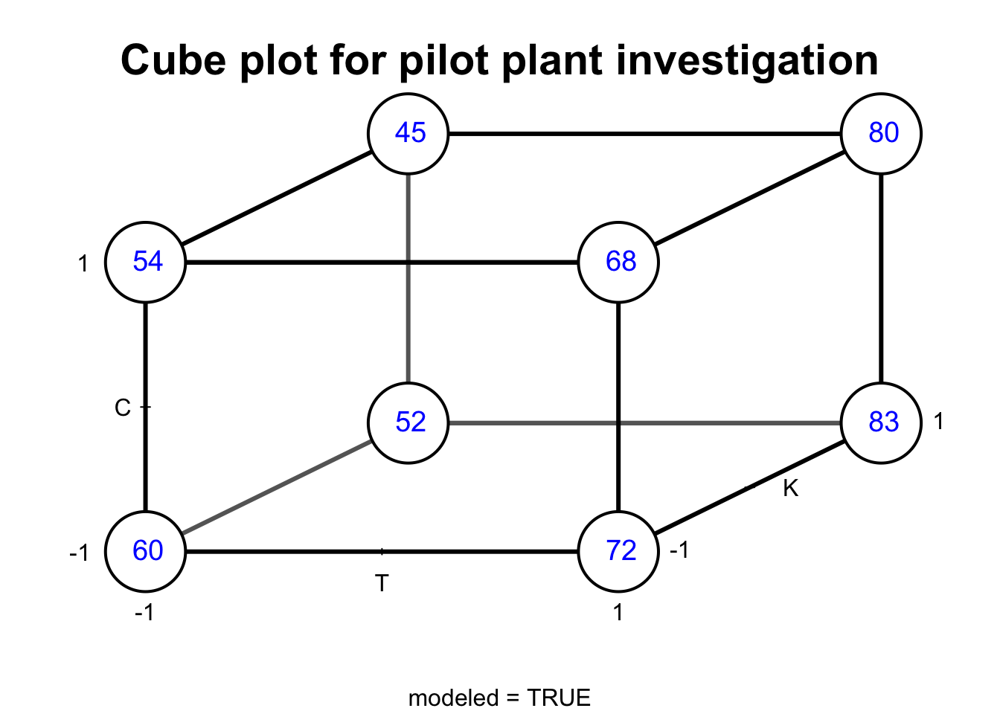
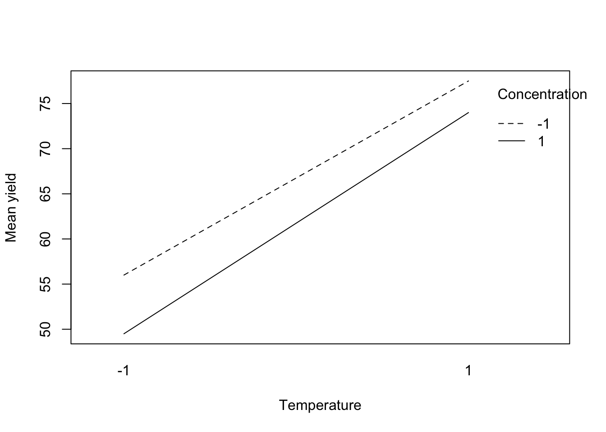

10 Factorial Designs at Two Levels - \(2^k\) Designs
Suppose that an investigator is interested in examining three components of a weight loss intervention. The three components are:
- Keeping a food diary (yes/no)
- Increasing activity (yes/no)
- Home visit (yes/no)
The investigator plans to investigate all \(2x2x2 = 2^3= 8\) combinations of experimental conditions. The experimental conditions will be.
| Experimental Condition number | Keep a food diary | Increasing physical activity | Home visit | Weight loss |
|---|---|---|---|---|
| 1 | No | No | No | \(y_1\) |
| 2 | No | No | Yes | \(y_2\) |
| 3 | No | Yes | No | \(y_3\) |
| 4 | No | Yes | Yes | \(y_4\) |
| 5 | Yes | No | No | \(y_5\) |
| 6 | Yes | No | Yes | \(y_6\) |
| 7 | Yes | Yes | No | \(y_7\) |
| 8 | Yes | Yes | Yes | \(y_8\) |
To perform a factorial design, you select a fixed number of levels of each of a number of factors (variables) and then run experiments in all possible combinations.
The factors can be quantitative or qualitative.
Two levels of a quantitative variable could be two different temperatures or two different concentrations.
Qualitative factors might be two types of catalysts or the presence and absence of some entity.
The notation \(2^3\) identifies: - the number of factors (3) - the number of levels of each factor (2) - how many experimental conditions are in the design (\(2^3 = 8\))
Factorial experiments can involve factors with different numbers of levels.
Exercise
Consider a \(4^2x3^2x2\) design.
- How many factors?
- How many levels of each factor?
- How many experimental conditions (runs)?
Answer: (a) There are 2+2+1 = 5 factors. (b) Two factors have 4 levels, 2 factors have 3 levels, and 1 factor has 2 levels. (c) There are 288 experimental conditions or runs.
10.1 Difference between ANOVA and Factorial Designs
In ANOVA the objective is to compare the individual experimental conditions with each other. In a factorial experiment the objective is generally to compare combinations of experimental conditions.
Let’s consider the food diary study above. What is the effect of keeping a food diary?
We can estimate the effect of food diary by comparing the mean of all conditions where food diary is set to NO (conditions 1-4) and mean of all conditions where food diary set to YES (conditions 5-8). This is also called the main effect of food diary, the adjective main being a reminder that this average is taken over the levels of the other factors.
The main effect of food diary is:
\[\frac{y_1+y_2+y_3+y_4}{4}-\frac{y_5+y_6+y_7+y_8}{4}.\]
The main effect of physical activity is:
\[\frac{y_1+y_2+y_5+y_6}{4}-\frac{y_3+y_4+y_7+y_8}{4}.\]
The main effect of home visit is:
\[\frac{y_1+y_3+y_5+y_7}{4}-\frac{y_2+y_4+y_6+y_8}{4}.\]
All experimental subjects are used, but are rearranged to make each comparison. Subjects are recycled to measure different effects. This is one reason why factorial experiments are more efficient.
10.2 Performing a \(2^k\) Factorial Design
To perform a factorial design:
- Select a fixed number of levels of each factor.
- Run experiments in all possible combinations.
We will discuss designs where there are just two levels for each factor. Factors can be quantitative or qualitative. Two levels of quantitative variable could be two different temperatures or concentrations. Two levels of a quantitative variable could be two different types of catalysts or presence/absence of some entity.
The following example if from Box, Hunter, and Hunter (2005).
An experiment employed a \(2^3\) factorial design with two quantitative factors - temperature (T) and concentration (C) - and a single qualitative factor - type of catalyst K.
Temperature T (\(\rm {C}^{\circ}\)) has two levels: \(160 \rm {C}^{\circ}\), and \(180 \rm {C}^{\circ}\). These are coded as -1 and +1 respectively.
Concentration C (%) has two levels: 20 and 40. These are coded as -1 and +1 respectively.
Catalyst K has two levels: A and B. These are coded as -1 and +1 respectively.
Each data value recorded is for the response yield \(y\) averaged over two duplicate runs.
| run | T | C | K | y |
|---|---|---|---|---|
| 1 | -1 | -1 | -1 | 60 |
| 2 | 1 | -1 | -1 | 72 |
| 3 | -1 | 1 | -1 | 54 |
| 4 | 1 | 1 | -1 | 68 |
| 5 | -1 | -1 | 1 | 52 |
| 6 | 1 | -1 | 1 | 83 |
| 7 | -1 | 1 | 1 | 45 |
| 8 | 1 | 1 | 1 | 80 |
10.3 Cube plots
The figure below shows the value of \(y\) for the various combinations of factors T, C, and K at the corners of a cube. For example, \(y = 54\) was obtained from the run 3 when T=-1, C = 1, and K=-1.
The cube shows how this design produces 12 comparisons along the 12 edges of the cube: four measures of the effect of temperature change; four measures of the effect of concentration change; four measures of the effect of catalyst change.
On each edge of the cube only one factor is changed with the other two held constant.
library("FrF2")
bhh54 <- lm(y~T*C*K,data = tab0502)
cubePlot(bhh54,"T","K","C",main = "Cube plot for pilot plant investigation")
10.4 Factorial effects
10.4.1 Main effects
The effects of runs 1 and 2 differ only because of temperature since concentration is 20% and type of catalyst is A. The difference 72-60 = 12 supplies one measure of the temperature effect with the remaining factors held fixed. There are four such measures of the temperature effect one for each of the four combinations of concentration and catalyst.
| C | K | Effect of changing T from 160 to 180 |
|---|---|---|
| 20 | A | \(y_2-y_1 = 72-60 = 12\) |
| 40 | A | \(y_4-y_3 = 68-54 = 14\) |
| 20 | B | \(y_6-y_5 = 83-52 = 31\) |
| 40 | B | \(y_8-y_7 = 80-45 = 35\) |
The main (average) effect of T is
\[T=\frac{12+14+31+35}{4}=23\]
There are a similar set of measures for the concentration C. In each of these the levels T and K are kept constant. The main effect for concentration C is:
| T | K | Effect of changing C from 20 to 40 |
|---|---|---|
| 160 | A | \(y_3-y_1 = 54-60=-6\) |
| 180 | A | \(y_4-y_2 = 68-72=-4\) |
| 160 | B | \(y_7-y_5 = 45-52=-7\) |
| 180 | B | \(y_8-y_6 = 80-83=-3\) |
The main (average) effect of C is
\[C=\frac{(-6)+(-4)+(-7)+(-3)}{4}=-5\]
The main effect for K is
| T | C | Effect of changing K from A to B |
|---|---|---|
| 160 | 20 | \(y_5-y_1 = 52-60=-8\) |
| 180 | 20 | \(y_6-y_2 = 83-72 = 11\) |
| 160 | 40 | \(y_7-y_3 = 45-54=-9\) |
| 180 | 40 | \(y_8-y_4 = 80-68 = 12\) |
The main (average) effect of K is
\[K=\frac{(-8)+(11)+(-9)+(12)}{4}=1.5\]
All 8 runs are used to estimate each of the main effects. This is the reason that factorial designs are more efficient compared to examining one factor at a time.
In general the main effects are the differences between two averages:
\[\text {Main Effect}={\bar y}_{+}-{\bar y}_{-}.\]
Where \({\bar y}_{+}\) is the average response corresponding to the +1 level of the factor and \({\bar y}_{-}\) is the average response corresponding to the -1 level of the factor.
\[\begin{aligned} T &= \frac{72+68+83+80}{4} -\frac{60+54+52+45}{4}=23 \\ C &= \frac{54+68+45+80}{4} -\frac{60+72+52+83}{4}=-5 \\ K &= \frac{52+83+45+80}{4} -\frac{60+72+54+68}{4}=1.5 \end{aligned}\]
10.4.2 Interaction effects
10.4.2.1 Two factor interactions
When the catalyst K is A the temperature effect is:
\[\frac{68+72}{2}-\frac{60+54}{2}=70-57 = 13.\]
When the catalyst K is B the temperature effect is:
\[\frac{83+80}{2}-\frac{52+45}{2}=81.5-48.5 = 33.\]
The average difference between these two average differences is called the interaction between temperature and catalyst denoted by TK. This is the interaction between the two factors temperature and catalyst - the two factor interaction between temperature and catalyst.
\[TK=\frac{33-13}{2}=10\]
This can also be seen on the cube plot: the average temperature effect is greater on the back face of the cube (33) compared to the front face of the cube (13).
10.4.2.2 Three factor interactions
The temperature by concentration interaction when the catalyst is B (at it’s +1 level) is:
\[ \text {Interaction TC} = \frac{(y_8-y_7)-(y_6-y_5)}{2} =\frac{(80-45)-(83-52)}{2}=2.\]
The temperature by concentration interaction when the catalyst is A (at it’s -1 level) is:
\[ \text {Interaction TC} = \frac{(y_4-y_3)-(y_2-y_1)}{2} =\frac{(68-54)-(72-60)}{2}=1.\]
The difference between these two interactions measures how consistent the temperature-by-concentration interaction for the two catalysts. Half this difference is defined as the three factor interaction of temperature, concentration, and catalyst denoted by TCK.
\[\text{TCK}=\frac{2-1}{2}=\frac{1}{2}.\]
10.5 Replication in factorial designs
The outcome \(y\) of the pilot plant experiment was the average of two replicated runs. The two separate runs are shown in the table below. The run order was randomized. For example, runs 6 and 13 are two replicates under the same settings for T, C, and K (T=-1, C=-1, K=-1).
| run | T | C | K | y |
|---|---|---|---|---|
| 6 | -1 | -1 | -1 | 59 |
| 2 | 1 | -1 | -1 | 74 |
| 1 | -1 | 1 | -1 | 50 |
| 5 | 1 | 1 | -1 | 69 |
| 8 | -1 | -1 | 1 | 50 |
| 9 | 1 | -1 | 1 | 81 |
| 3 | -1 | 1 | 1 | 46 |
| 7 | 1 | 1 | 1 | 79 |
| 13 | -1 | -1 | -1 | 61 |
| 4 | 1 | -1 | -1 | 70 |
| 16 | -1 | 1 | -1 | 58 |
| 10 | 1 | 1 | -1 | 67 |
| 12 | -1 | -1 | 1 | 54 |
| 14 | 1 | -1 | 1 | 85 |
| 11 | -1 | 1 | 1 | 44 |
| 15 | 1 | 1 | 1 | 81 |
Replicating a run is not always feasible. The pilot plant experiment run involved cleaning the reactor, inserting the appropriate catalyst charge, and running the apparatus at a given temperature at a given feed concentration for 3 hours to a1low the process to settle down at the chosen experimental conditions, and (4) sampling the output every 15 minutes during the final hours of running. (Box, Hunter, Hunter, 2005)
| run1 | run2 | T | C | K | y1 | y2 | diff |
|---|---|---|---|---|---|---|---|
| 6 | 13 | -1 | -1 | -1 | 59 | 61 | -2 |
| 2 | 4 | 1 | -1 | -1 | 74 | 70 | 4 |
| 1 | 16 | -1 | 1 | -1 | 50 | 58 | -8 |
| 5 | 10 | 1 | 1 | -1 | 69 | 67 | 2 |
| 8 | 12 | -1 | -1 | 1 | 50 | 54 | -4 |
| 9 | 14 | 1 | -1 | 1 | 81 | 85 | -4 |
| 3 | 11 | -1 | 1 | 1 | 46 | 44 | 2 |
| 7 | 15 | 1 | 1 | 1 | 79 | 81 | -2 |
Suppose that the variance of each measurement is \(\sigma^2\). The estimated variance at each set of conditions is:
\[ s_i^2 = \frac{\left(y_{i1}-y_{i2}\right)^2}{2}=\frac{{\text {diff}}^2}{2},\]
where \(y_{i1}\) is the first outcome from \(ith\) run. In the table above \(\text{diff}_i= \left(y_{i1}-y_{i2}\right)\). A pooled estimate of \(\sigma^2\) is
\[s^2=\frac{\sum_{i = 1}^8 s_{i}^2} {8}=\frac{64}{8}=8.\]
The estimate of the variance with one degree of freedom for a duplicated run is \(s_i^2=\left(y_{i1}-y_{i2}\right).\) The average of these yields single degree-of-freedom estimates yields a pooled estimate \(s^2 = 8\) with 8 degrees of freedom.
10.6 Estimate of the error variance and standard error of effects from replicated runs
Each estimated effect such as T, C, K, TC, etc. is a difference between two averages of 8 observations. The variance of a factorial effect for duplicated runs is
\[Var\left(\text{effect}\right)=\left(\frac{1}{8}+\frac{1}{8}\right)s^2=\frac{8}{4}=2\]
So, the standard error of any factorial effect is:
\[se\left(\text{effect}\right)=\sqrt{2}=1.4.\]
10.7 Interpretation of results
Which effects are real and which can be explained by chance? A rough rule of thumb is any effect that is 2-3 times their standard error are not easily explained by chance alone.
If we assume that the observations are independent and normally distributed then \[\text{effect}/se\left(\text{effect}\right) \sim t_8.\]
So a 95% confidence interval can be calculated as:
\[\text{effect} \pm t_{8,.05/2}sese\left(\text{effect}\right).\]
where \(t_{8,.05/2}\) is the 97.5th percentile of the \(t_8\). This is obtained in R via the qt() function.
## [1] 2.306004So, a 95% confidence interval for a factorial effect is
\[\text{effect} \pm 2.3 \times 1.4 =\text{effect} \pm 3.2.\]
A 95% confidence interval for T is
## [1] 19.8## [1] 26.2A 95% confidence interval for K is
## [1] -1.7## [1] 4.7The effect due to temperature is probably not due to chance, but chance cannot be rules for the effect due to catalyst.
The main effect of a factor should be individually interpreted only if there is no evidence that the factor interacts with other factors.
10.8 Interaction plots
The plots below show the mean yield for each pair of factors TC, TK, CK (i.e., each factor-level combination of these factors). These plots are often called interaction plots. If the two lines are parallel then this indicates no interaction, and if the lines cross or are close to crossing then this indicates that an interaction might be present.
The plots below indicate a two-way interaction between catalyst and temperature.
interaction.plot(tab0502$T,tab0502$C,tab0502$y, type = "l",
xlab = "Temperature",trace.label = "Concentration",
ylab = "Mean yield")
interaction.plot(tab0502$T,tab0502$K,tab0502$y, type = "l",
xlab = "Temperature",trace.label = "Catalyst",
ylab = "Mean yield")
interaction.plot(tab0502$K,tab0502$C,tab0502$y, type = "l",
xlab = "Catalyst",trace.label = "Concentration",
ylab = "Mean yield")
10.9 Linear Model for a \(2^k\) Factorial Design
Let \(y_{i}\) be the yield from the \(i^{th}\) run,
\[x_{i1} = \left\{ \begin{array}{ll} +1 & \mbox{if } T = 180 \\ -1 & \mbox{if } T = 160 \end{array} \right.\]
\[x_{i2} = \left\{ \begin{array}{ll} +1 & \mbox{if } C = 40 \\ -1 & \mbox{if } C = 20 \end{array} \right.\]
\[x_{i3} = \left\{ \begin{array}{ll} +1 & \mbox{if } K = B \\ -1 & \mbox{if } K = A \end{array} \right.\]
A linear model for a \(2^3\) factorial design is:
\[y_i=\beta_0+\beta_1 x_{i1}+\beta_2 x_{i2}+\beta_3 x_{i3}+\beta_4 x_{i1}x_{i2} +\beta_5 x_{i1}x_{i3}+\beta_6 x_{i2}x_{i3} +\beta_7 x_{i1} x_{i2} x_{i3} + \epsilon_i.\]
The variables \(x_{i1}x_{i2}\) is the interaction between temperature and concentration, \(x_{i1}x_{i3}\) is the interaction between temperature and catalyst, etc.
The parameter estimates are obtained via the lm() function in R.
Estimate Std. Error t value Pr(>|t|)
(Intercept) 64.25 0.71 90.86 0.00
T 11.50 0.71 16.26 0.00
K 0.75 0.71 1.06 0.32
C -2.50 0.71 -3.54 0.01
T:K 5.00 0.71 7.07 0.00
T:C 0.75 0.71 1.06 0.32
K:C 0.00 0.71 0.00 1.00
T:K:C 0.25 0.71 0.35 0.73The table of contrasts for a \(2^3\) design is the design matrix \(X\) from the linear model above.
| Mean | T | K | C | T:K | T:C | K:C | T:K:C | yield average |
|---|---|---|---|---|---|---|---|---|
| 1 | -1 | -1 | -1 | 1 | 1 | 1 | -1 | 60 |
| 1 | 1 | -1 | -1 | -1 | -1 | 1 | 1 | 72 |
| 1 | -1 | -1 | 1 | 1 | -1 | -1 | 1 | 54 |
| 1 | 1 | -1 | 1 | -1 | 1 | -1 | -1 | 68 |
| 1 | -1 | 1 | -1 | -1 | 1 | -1 | 1 | 52 |
| 1 | 1 | 1 | -1 | 1 | -1 | -1 | -1 | 83 |
| 1 | -1 | 1 | 1 | -1 | -1 | 1 | -1 | 45 |
| 1 | 1 | 1 | 1 | 1 | 1 | 1 | 1 | 80 |
If the column of T is multiplied by the yield average and divided by 4 then the main effect of T is obtained.
- \(T=\frac{-60+72-54+68-52+83-45+80}{4}=23.\) The divisor of 4 transforms the contrast into a difference between two averages.
- Signs for interaction contrasts obtained by multiplying signs of their respective factors.
- Each column perfectly balanced (equal numbers of positives and negatives) with respect to other columns.
- Balanced (orthogonal) design ensures each estimated effect is unaffected by magnitude and signs of other effects.
The estimated least squares coefficients are one-half the factorial estimates, and the intercept \(\beta_0\) is the sample mean. Therefore, the factorial estimates are twice the least squares coefficients. For example,
\[\begin{aligned} {\hat \beta_1}=11.63 &\Rightarrow T = 2 \times 11.63 = 23.26\\ {\hat \beta_2}=0.88 &\Rightarrow K = 2 \times 0.88 = 1.75 \\ {\hat \beta_4}=5.12 &\Rightarrow TK = 2 \times 5.12 = 10.25 \end{aligned}\]
The least squares estimates can be multiplied by 2 in R.
(Intercept) T K C T:K T:C
128.5 23.0 1.5 -5.0 10.0 1.5
K:C T:K:C
0.0 0.5 When there are replicated runs we also obtain p-values and confidence intervals for the factorial effects from the regression model. For example, the p-value for \(\beta_1\) corresponds to the factorial effect for temperature
\[H_0: \beta_1 = 0 {\hspace{0.2cm}} \text{vs.} {\hspace{0.2cm}} H_1:\beta_1 \ne 0.\]
If the null hypothesis is true then \(\beta_1 = 0 \Rightarrow T = 0 \Rightarrow \mu_{T+}-\mu_{T-}=0 \Rightarrow \mu_{T+}=\mu_{T-},\)
where \(\mu_{T+}\) is the mean yield when the temperature is set at \(180^{\circ}\) and \(\mu_{T-}\) is the mean yield when the temperature is set to \(160^{\circ}.\) The p-value for temperature is small (Pr(>|t|)=0). This means that there is evidence that the mean yield is different at \(180^{\circ}\) compared to \(160^{\circ}\).
To obtain 95% confidence intervals for the factorial effects we multiply the 95% confidence intervals for the regression parameters by 2. This is easily done in R using the function confint.lm().
2.5 % 97.5 %
(Intercept) 125.238818 131.761182
T 19.738818 26.261182
K -1.761182 4.761182
C -8.261182 -1.738818
T:K 6.738818 13.261182
T:C -1.761182 4.761182
K:C -3.261182 3.261182
T:K:C -2.761182 3.761182The 95% confidence interval for the main effect of concentration is (-8.0,-1.5), and the two-way interaction between temperature and concentration has 95% confidence interval (-1.46,4.96).
10.10 Advantages of factorial designs over one-factor-at-a-time designs
Suppose that one factor at a time was investigated. For example, temperature is investigated while holding concentration at 20% (-1) and catalyst at B (+1).
In order for the effect to have more general relevance it would be necessary for the effect to be the same at all the other levels of concentration and catalyst. In other words there is no interaction between factors (e.g., temperature and catalyst). If the effect is the same then a factorial design is more efficient since the estimates of the effects require fewer observations to achieve the same precision.
If the effect is different at other levels of concentration and catalyst then the factorial can detect and estimate interactions.
10.11 Normal Plots in Unreplicated Factorial Designs
10.11.1 Review of Normal Quantile Plots
The normality of a set of data can be assessed by the following method. Let \(r_{(1)}<...<r_{(N)}\) denote the ordered values of \(r_1,...,r_N\). For example, \(r_{(1)}\) is the minimum of \({r_1,...,r_N}\), and \(r_{(N)}\) is the maximum of \({r_1,...,r_N}\). So, if the data is: -1, 2, -10, 20 then \(r_{(1)}=-20,r_{(2)}=-1, r_{(3)}=2, r_{(4)}=20\).
The cumulative distribution function (CDF) of the \(N(0,1)\) has an S-shape.

So, a test of normality for a set of data is to plot the ordered values \(r_{(i)}\) of the data versus \(p_i=(i-0.5)/N\). If the plot has the same S-shape as the normal CDF then this is evidence that the data come from a normal distribution.
Below is a plot of \(r_{(i)}\) vs. \(p_i=(i-0.5)/N, i = 1,...,N\) for a random sample of 1000 simulated from the plot

We can also construct a normal quantile-quantile plot. It can be shown that \(\Phi(r_{(i)})\) has a uniform distribution on \([0,1]\). This implies that \(E(\Phi(r_{(i)}))=i/(N+1)\) (this is the expected value of the \(ith\) order statistic from a uniform distribution over \([0,1]\).
This implies that the \(N\) points \((p_i,\Phi(r_{(i)}))\) should fall on a straight line. Now apply the \(\Phi^{-1}\) transformation to the horizontal and vertical scales. The \(N\) points
\[\left(\Phi^{-1}(p_i), r_{(i)} \right)\]
form the normal probability plot of \(r_1,...,r_N\). If \(r_1,...,r_N\) are generated from a normal distribution then a plot of the points \(\left(\Phi^{-1}(p_i), r_{(i)} \right), i = 1,...,N\) should be a straight line.
In R qnorm() is \(\Phi^{-1}\).

We usually use the built in function qqnorm() (and qqline() to add a straight line for comparison) to generate normal Q-Q plots. Note that R uses a slightly more general version of quantile (\(p_i=(1-a)/(N+(1-a)-a)\), where \(a = 3/8\), if \(N \le 10\), \(a = 1/2\), if \(N > 10\).

A marked (systematic) deviation of the plot from the straight line would indicate that:
- The normality assumption does not hold.
- The variance is not constant.
A major application is in factorial designs where the \(r(i)\) are replaced by ordered factorial effects. Let \(\hat {\theta_{(1)}} < \hat {\theta_{(2)}} < \cdots < \hat {\theta_{(N)}}\) be \(N\) ordered factorial estimates. If we plot
\[\hat {\theta_{i}} \thinspace {\text vs. } \thinspace \Phi^{-1}(p_i). \thinspace i = 1,...,N.\]
then factorial effects \(\hat {\theta_{i}}\) that are close to 0 will fall along a straight line. Therefore, points that fall off the straight line will be declared significant.
The rationale is as follows: 1. Assume that the estimated effects \(\hat {\theta_{i}}\) are \(N(\theta, \sigma)\) (estimated effects involve averaging of N observations and CLT ensures averages are nearly normal for N as small as 8). 2. If \(H_0: \theta_i = 0, \thinspace i = 1,...,N\) is true then all the estimated effects will be zero. 3. The resulting normal probability plot of the estimated effects will be a straight line. 4. Therefore, the normal probability plot is testing whether all of the estimated effects have the same distribution (i.e. same means).
- When some of the effects are nonzero the corresponding estimated effects will tend to be larger and fall off the straight line.
- For positive effects the estimated effects fall above the line and negative effects fall below the line.
10.11.2 Example - \(2^4\) design for studying a chemical reaction
A process development experiment studied four factors in a \(2^4\) factorial design: amount of catalyst charge 1, temperature 2, pressure 3, and concentration of one of the reactants 4. The response \(y\) is the percent conversion at each of the 16 run conditions. The design is shown below.
| x1 | x2 | x3 | x4 | conversion |
|---|---|---|---|---|
| -1 | -1 | -1 | -1 | 70 |
| 1 | -1 | -1 | -1 | 60 |
| -1 | 1 | -1 | -1 | 89 |
| 1 | 1 | -1 | -1 | 81 |
| -1 | -1 | 1 | -1 | 69 |
| 1 | -1 | 1 | -1 | 62 |
| -1 | 1 | 1 | -1 | 88 |
| 1 | 1 | 1 | -1 | 81 |
| -1 | -1 | -1 | 1 | 60 |
| 1 | -1 | -1 | 1 | 49 |
| -1 | 1 | -1 | 1 | 88 |
| 1 | 1 | -1 | 1 | 82 |
| -1 | -1 | 1 | 1 | 60 |
| 1 | -1 | 1 | 1 | 52 |
| -1 | 1 | 1 | 1 | 86 |
| 1 | 1 | 1 | 1 | 79 |
The design is not replicated so it’s not possible to estimate the standard errors of the factorial effects.
(Intercept) x1 x2 x3 x4 x1:x2
144.50 -8.00 24.00 -0.25 -5.50 1.00
x1:x3 x2:x3 x1:x4 x2:x4 x3:x4 x1:x2:x3
0.75 -1.25 0.00 4.50 -0.25 -0.75
x1:x2:x4 x1:x3:x4 x2:x3:x4 x1:x2:x3:x4
0.50 -0.25 -0.75 -0.25 A normal plot of the factorial effects is obtained by using the function DanielPlot() in the FrF2 library.
library(FrF2)
DanielPlot(fact1,half = FALSE,autolab = F, main = "Normal plot of effects from process development study")
The effects corresponding to x1, x4, x2:x4, x2 do not fall along the straight line.
10.12 Half-Normal Plots
Related graphical method is called the half-normal probability plot. Let
\[\left|\hat{\theta}\right|_{(1)} < \left|\hat{\theta}\right|_{(2)} < \cdots < \left|\hat{\theta}\right|_{(N)}.\]
denote the ordered values of the unsigned factorial effect estimates.
Plot them against the coordinates based on the half-normal distribution - the absolute value of a normal random variable has a half-normal distribution.
The half-normal probability plot consists of the points
\[\left|\hat{\theta}\right|_{(i)} \thinspace {\text vs. } \thinspace \Phi^{-1}(0.5+0.5[i-0.5]/N). \thinspace i = 1,...,N.\]
An advantage of this plot is that all the large estimated effects appear in the upper right hand corner and fall above the line.
The half-normal plot for the effects in the process development example is can be obtained with DanielPlot() with the option half = TRUE.
library(FrF2)
DanielPlot(fact1,half = TRUE,autolab = F, main = "Normal plot of effects from process development study")
10.13 Lenth’s method: testing significance for experiments without variance estimates
Half-normal and normal plots are informal graphical methods involving visual judgement. It’s desirable to judge a deviation from a straight line quantitatively based on a formal test of significance. Lenth (1989) proposed a method that is simple to compute and performs well. (pg. 205, Box, Hunter, and Hunter (2005))
Let
\[\hat{\theta}_{(1)},...,\hat{\theta}_{(N)} \]
be estimated factorial effects of \(\theta_1,\theta_2,...,\theta_N\) In a \(2^k\) design \(N = 2^k-1\). Assume that all the factorial effects have the same standard deviation.
The pseudo standard error (PSE) is defined as
\[PSE = 1.5 \cdot \text{median}_{\left|\hat{\theta}_{i}\right|<2.5s_0}\left|\hat{\theta}_{i}\right|,\]
where the median is computed among the \(\left|\hat{\theta}_{i}\right|\) with \(\left|\hat{\theta}_{i}\right| < 2.5 s_0\) and
\[s_0 = 1.5 \cdot \text{median}\left|\hat{\theta}_{i}\right|.\]
\(1.5 \cdot s_0\) is a consistent estimator of the standard deviation of \(\hat \theta\) when \(\theta_i = 0\) and the underlying distribution is normal. The \(P\left(|Z|>2.57\right)=0.01, Z\sim N(0,1)\). So, \(\left|\hat{\theta}_{i}\right|<2.5s_0\) trims approximately 1% of the \(\hat \theta_i\) if \(\theta_i = 0\). The trimming attempts to remove the \(\hat \theta_i\) associated with non-zero (active) effects. By using the median in combination with the trimming means that \(PSE\) is not sensitive to the \(\hat \theta_i\) associated with active effects.
By dividing \(\hat \theta_i\) by \(PSE\), \(t\)-like statistics are obtained:
\[t_{PSE,i}=\frac{\hat \theta_i}{PSE}.\] (see Wu and Hamada (2011), pg. 180)
Lenth’s method declares an effect \(\hat \theta_i\) significant if the value of \(\left|t_{PSE,i} \right|\) value exceeds the critical value of the distribution. The critical values have been calculated by Wu and Hamada (2011).
To obtain a margin of error Lenth suggested multiplying the PSE by the \(100*(1-\alpha)\) quantile of the \(t_d\) distribution, \(t_{d,\alpha/2}\). The degrees of freedom is \(d = N/3\). For example, the margin of error for a 95% confidence interval for \(\theta_i\) is
\[ME= t_{d,.025}\times PSE.\]
All estimates greater than the \(ME\) may be viewed as “significant”, but with so many estimates being considered simultaneously, some will be falsely identified.
A simultaneous margin of error that accounts for multiple testing can also be calculated,
\[SME = t_{d,\gamma} \times PSE,\]
where \(\gamma=\left(1+0.95^{1/N}\right)/2\).
Let’s calculate Lenth’s method for the process development example. The estimated factorial effects are:
(Intercept) x1 x2 x3 x4 x1:x2
144.50 -8.00 24.00 -0.25 -5.50 1.00
x1:x3 x2:x3 x1:x4 x2:x4 x3:x4 x1:x2:x3
0.75 -1.25 0.00 4.50 -0.25 -0.75
x1:x2:x4 x1:x3:x4 x2:x3:x4 x1:x2:x3:x4
0.50 -0.25 -0.75 -0.25 The estimate of \(s_0 = 1.5 \cdot \text{median}\left|\hat{\theta}_{i}\right|\) is
[1] 1.125The trimming constant \(2.5s_0\) is
[1] 2.8125The effects \(\hat{\theta}_{i}\) such that \({\left|\hat{\theta}_{i}\right| \ge 2.5s_0}\) will be trimmed. Below it’s the effects labelled TRUE (x1,x2,x4,x2:x4)
(Intercept) x1 x2 x3 x4 x1:x2
FALSE FALSE FALSE TRUE FALSE TRUE
x1:x3 x2:x3 x1:x4 x2:x4 x3:x4 x1:x2:x3
TRUE TRUE TRUE FALSE TRUE TRUE
x1:x2:x4 x1:x3:x4 x2:x3:x4 x1:x2:x3:x4
TRUE TRUE TRUE TRUE The \(PSE\) is then calculated as 1.5 times the median of these values.
[1] 0.75The \(ME\) and SME are
[1] 1.927936[1] 3.913988So, 95% confidence intervals for the effects are:
| eff | lower | upper | |
|---|---|---|---|
| (Intercept) | 144.50 | 142.57 | 146.43 |
| x1 | -8.00 | -9.93 | -6.07 |
| x2 | 24.00 | 22.07 | 25.93 |
| x3 | -0.25 | -2.18 | 1.68 |
| x4 | -5.50 | -7.43 | -3.57 |
| x1:x2 | 1.00 | -0.93 | 2.93 |
| x1:x3 | 0.75 | -1.18 | 2.68 |
| x2:x3 | -1.25 | -3.18 | 0.68 |
| x1:x4 | 0.00 | -1.93 | 1.93 |
| x2:x4 | 4.50 | 2.57 | 6.43 |
| x3:x4 | -0.25 | -2.18 | 1.68 |
| x1:x2:x3 | -0.75 | -2.68 | 1.18 |
| x1:x2:x4 | 0.50 | -1.43 | 2.43 |
| x1:x3:x4 | -0.25 | -2.18 | 1.68 |
| x2:x3:x4 | -0.75 | -2.68 | 1.18 |
| x1:x2:x3:x4 | -0.25 | -2.18 | 1.68 |
A plot of the effects with a \(ME\) and \(SME\) is usually called a Lenth plot. In R it can be implemented via the function Lenthplot() in the BsMD library. The values of \(PSE, ME, SME\) are part of the output. The spikes in the plot below are used to display factor effects.

alpha PSE ME SME
0.050000 0.750000 1.927936 3.913988 The option cex.fac = 0.5 adjusts the size of the characters used for factor labels.
10.14 Blocking Factorial Designs
In a trial conducted using a \(2^3\) design it might be desirable to use the same batch of raw material to make all 8 runs. Suppose that batches of raw material were only large enough to make 4 runs. Then the concept of blocking could be used.
The following R code generates the design matrix for a \(2^3\) design.
x1 <- rep(c(-1,1),4)
x2 <- rep(c(-1,-1,1,1),2)
x3 <- rep(c(rep(-1,4),rep(1,4)))
x12 <- x1*x2
x13 <- x1*x3
x23 <- x2*x3
x123 <- x1*x2*x3
run <- 1:8
factnames <- c("Run","1","2","3","12","13","23","123")
knitr::kable(cbind(run,x1,x2,x3,x12,x13,x23,x123),col.names = factnames)| Run | 1 | 2 | 3 | 12 | 13 | 23 | 123 |
|---|---|---|---|---|---|---|---|
| 1 | -1 | -1 | -1 | 1 | 1 | 1 | -1 |
| 2 | 1 | -1 | -1 | -1 | -1 | 1 | 1 |
| 3 | -1 | 1 | -1 | -1 | 1 | -1 | 1 |
| 4 | 1 | 1 | -1 | 1 | -1 | -1 | -1 |
| 5 | -1 | -1 | 1 | 1 | -1 | -1 | 1 |
| 6 | 1 | -1 | 1 | -1 | 1 | -1 | -1 |
| 7 | -1 | 1 | 1 | -1 | -1 | 1 | -1 |
| 8 | 1 | 1 | 1 | 1 | 1 | 1 | 1 |
Suppose that we assign runs 1, 4, 6, 7 to block I which use the first batch of raw material and runs 2, 3, 5, 8 to block II which use the second batch of raw material. The design is blocked this way by placing all runs in which the 123 is minus in one block and all the other runs in which 123 is plus in the other block.
Any systematic differences between the two blocks of four runs will be eliminated from all the main effects and two factor interactions. What you gain is the elimination of systematic differences between blocks. But now the three factor interaction is confounded with any batch (block) difference. The ability to estimate the three factor interaction separately from the block effect is lost.
10.14.1 Effect hierarchy principle
Lower-order effects are more likely to be important than higher-order effects.
Effects of the same order are equally likely to be important.
This principle suggests that when resources are scare, priority should be given to the estimation of lower order effects. This is useful in screening experiments that have a large number of factors and relatively small number of runs.
One reason that many accept this principle is that higher order interactions are more difficult to interpret or justify physically. As a result investigators are less interested in estimating the magnitudes of these effects even when they are statistically significant.
Assigning a fraction of the \(2^k\) treatment combinations to each block results in an incomplete blocking scheme as in the case of the balanced incomplete block design. The difference is that the factorial structure of a \(2^k\) design allows a neater assignment of treatment combinations to blocks. The neater assignment is done by dividing the total combinations into various fractions and finding optimal assignments by exploiting combinatorial relationships.
10.14.2 Generation of Orthogonal Blocks
In the \(2^3\) example suppose that the block variable is given the identifying number 4.
| Run | 1 | 2 | 3 | 4 = 123 |
|---|---|---|---|---|
| 1 | -1 | -1 | -1 | -1 |
| 2 | 1 | -1 | -1 | 1 |
| 3 | -1 | 1 | -1 | 1 |
| 4 | 1 | 1 | -1 | -1 |
| 5 | -1 | -1 | 1 | 1 |
| 6 | 1 | -1 | 1 | -1 |
| 7 | -1 | 1 | 1 | -1 |
| 8 | 1 | 1 | 1 | 1 |
Then you could think of your experiment as containing four factors. The fourth factor will have the special property that it does not interact with other factors. If this new factor is introduced by having its levels coincide exactly with the plus and minus signs attributed to 123 then the blocking is said to be generated by the relationship 4 = 123. This idea can be used to derive more sophisticated blocking arrangements.
10.14.3 An example of how not to block
This example is from Box, Hunter, and Hunter (2005). Suppose we would like to arrange the \(2^3\) design into four blocks.
| Run | 1 | 2 | 3 | 4 = 123 | 5 = 23 | 45 = 1 |
|---|---|---|---|---|---|---|
| 1 | -1 | -1 | -1 | -1 | 1 | -1 |
| 2 | 1 | -1 | -1 | 1 | 1 | 1 |
| 3 | -1 | 1 | -1 | 1 | -1 | -1 |
| 4 | 1 | 1 | -1 | -1 | -1 | 1 |
| 5 | -1 | -1 | 1 | 1 | -1 | -1 |
| 6 | 1 | -1 | 1 | -1 | -1 | 1 |
| 7 | -1 | 1 | 1 | -1 | 1 | -1 |
| 8 | 1 | 1 | 1 | 1 | 1 | 1 |
Consider two block factors called 4 and 5. 4 is associated with the three factor interaction and, say, 5 is associated with a the two factor interaction 23 which was deemed unimportant by the investigator. Runs are placed in different blocks depending on the signs of the block variables in columns 4 and 5. Runs for which the signs of 4 and 5 are – would go in one block, -+ in a second block, the +- in a third block, and the ++ runs in the fourth.
| Block | Run |
|---|---|
| I | 4,6 |
| II | 3,5 |
| III | 1,7 |
| IV | 2,8 |
Block variables 4 and 5 are confounded with interactions 123 and 23. But there are three degrees of freedom associated with four blocks. The third degree of freedom accommodates the 45 interaction. But, the 45 interaction has the same signs as the main effect 1. Therefore 45 = 1. Therefore, if we use 4 and 5 as blocking variables it will be confounded with block differences.
Main effects should not be confounded with block effects. Any blocking scheme that confounds main effects with blocks should not be used. This is based on the assumption: The block-by-treatment interactions are negligible.
This assumption states that treatment effects do not vary from block to block. Without this assumption estimability of the factorial effects will be very complicated.
For example, if \(B_1 = 12\) then this implies two other relations:
\[ 1B_1 = 1\times B_1 = 112 = 2 \thinspace {\text {and}} \thinspace B_12 = B_1 \times 2 = 122 = 1.\]
If there is a significant interaction between the block effect \(B_1\) and the main effect 1 then the main effect 2 is confounded with \(B_11\). Similarly, if there is a significant interaction between the block effect \(B_1\) and the main effect 2 then the main effect 1 is confounded with \(B_12\).
It can be checked by plotting the residuals for all the treatments within each block. If the pattern varies from block to block then the assumption may be violated. A block-by-treatment interaction often suggests interesting information about the treatment and blocking variables.
10.15 Generators and Defining Relations
A simple calculus is available to show the consequences of any proposed blocking arrangement. If any column in a \(2^k\) design are multiplied by themselves a column of plus signs is obtained. This is denoted by the symbol \(I\). Thus you can write
\[I = 11 = 22 = 33 = 44 = 55,\]
where, for example, 22 means the product of the elements of column 2 with itself.
Any column multiplied by \(I\) leaves the elements unchanged. So, \(I3 = 3\).
A general approach for arranging a \(2^k\) design in \(2^q\) blocks of size \(2^{k-q}\) is as follows.
Let \(B_1, B_2, ...,B_q\) be the block variables and the factorial effect \(v_i\) is confounded with \(B_i\),
\[B_1 = v_1,B_2 = v_2,...,B_q = v_q.\]
The block effects are obtained by multiplying the \(B_i\)’s:
\[B_1B_2 = v_1v_2, B_1B_3 = v_1v_3,...,B_1B_2 \cdots B_q = v_1v_2 \cdots v_q\]
There are \(2^{q}-1\) possible products of the \(B_i\)’s and the \(I\) (whose components are +).
Example: A \(2^5\) design can be arranged in 8 blocks of size \(2^{5-3}=4\).
Consider two blocking schemes.
- Define the blocks as
\[B_1 = 135, B_2 = 235, B_3 = 1234.\] The remaining blocks are confounded with the following interactions:
\[B_1B_2 = 12, B_1B_3 = 245,B_2B_3 = 145,B_1B_2B_3 = 34\]
In this blocking scheme the seven block effects are confounded with the seven interactions
\[12,34,135,145,235,245,1234.\]
- Define the blocks as:
\[B_1 = 12, B_2 = 13, B_3 = 45.\]
This blocking scheme confounds the following interactions.
\[12, 13, 23,45, 1245,1345,2345.\]
Which is a better blocking scheme?
The second scheme confounds four two-factor interactions, while the first confounds only two two-factor interactions. Since two-factor interactions are more likely to be important than three- or four-factor interactions, the first scheme is superior.
References
Box, George EP, J Stuart Hunter, and William Gordon Hunter. 2005. Statistics for Experimenters: Design, Innovation, and Discovery. Vol. 2. Wiley-Interscience New York.
Lenth, Russell V. 1989. “Quick and Easy Analysis of Unreplicated Factorials.†Technometrics 31 (4): 469–73.
Wu, CF Jeff, and Michael S Hamada. 2011. Experiments: Planning, Analysis, and Optimization. Vol. 552. John Wiley & Sons.